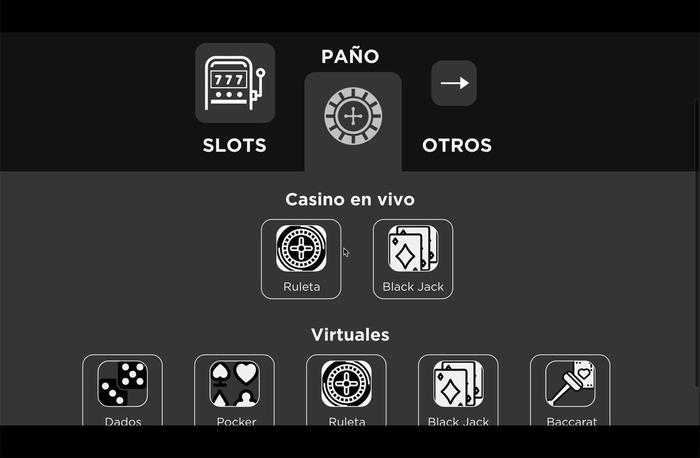
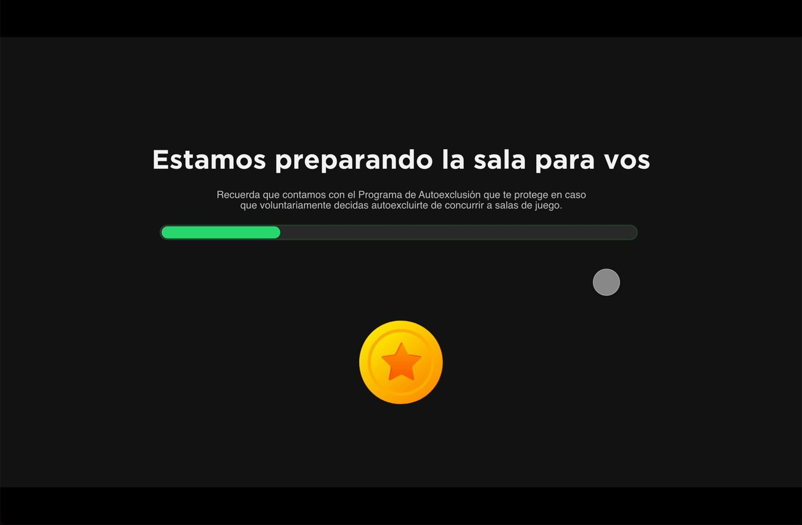
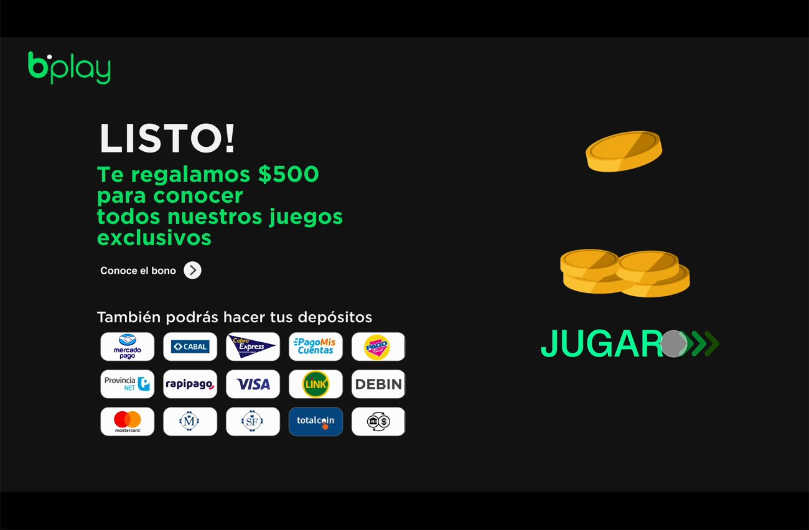

02 — THE FLOW
Six screens from landing to lobby






Sign-up and onboarding for a licensed online casino and sports-betting platform in Argentina: the platform collects only what it needs to personalize the lobby, and uses the wait after registration to say what a licensed operator must say.
Online casinos in Argentina are licensed per province, so the first thing the platform needs to know is where the player is. It also has to verify age, show responsible-gaming information and, eventually, validate identity. Done as a plain form, that is a wall of legal steps before anyone sees a game.
Ask only what personalizes the experience, and turn the mandatory messages into part of the welcome.



Province, games and username are separate screens with one question each. The player always knows what is being asked and why.
The game preferences are not a survey: they decide the first rows of the lobby (“Especiales para vos”).
Responsible-gaming, self-exclusion and identity messages appear while the room loads, one at a time, instead of as a block of terms.
The bonus and the payment methods close the flow, so the first action after sign-up is “Jugar”, not another form.
I mapped the information architecture of the sign-up, wireframed the screens and built the interactive prototype shown here, used to review the flow with the team before development.